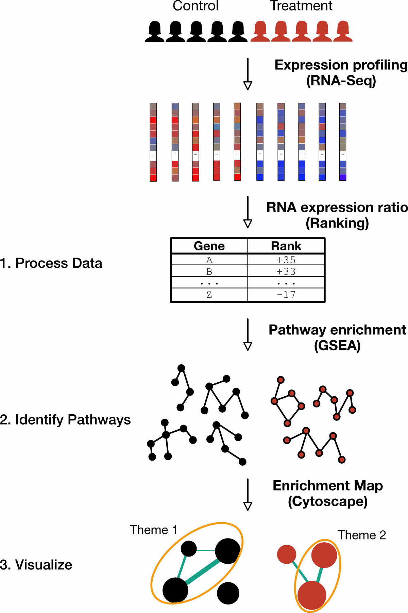

Preview
Why think in terms of pathways?
There is great interest in providing mechanistic explanations for biological behaviours and phenotypes. While the nature of genes and the products they encode may be ultimately responsible for phenomena, it is often helpful to consider the coordination of genes and macromolecules.
A ‘pathway’ can be defined as a collection of molecules that lead to a change or a produce a product. Thinking about biological behaviours in terms of pathways is intuitively appealing for several reasons. First, genes rarely act in isolation but rather as parts of systems. Moreover, the influence of a single gene is generally difficult to divine from its molecular properties. Second, pathways are, by construction, groups of gene products that contribute to some higher-level function in the cell. Third, multiple pathways are implicated in most cell behaviours. In summary, ‘pathway thinking’ is a useful abstraction that connects molecular-level entities with macroscopic behaviour.
“… the ultimate goal of pathway-based approaches is to connect a molecular level (phenomena) with a phenotype of an organism causally or at least associatively. In this case of a disease-related phenotype, this could mean that certain molecular processes are responsible for the manifestation or development of a disease.”
- Emmert-Streib (2011)
Why pathway enrichment analysis? Why is it useful?
Counting the entire RNA complement of a cell is now routine. While providing an astonishing amount quantitative detail, it is often not clear how to interpret this information. What does it all mean?
Consider a common scenario in which a researcher wishes to provide some explanation for the cellular response to treatment. Typically, a pairwise comparison is made between control and treated: A measurement of their transcriptomes may provide a subset of genes deemed ‘differentially-expressed’ according to a statistical criteria (e.g. 2-fold change relative to control). In rare cases a researcher may be able forge an interesting connection between a gene and the cellular response of interest.
However, there are some potential caveats to the approach just described. First, the cutoff for ‘differentially-expressed’ (i.e. 2-fold change) is arbitrary. Second, it may be difficult if not impossible to directly associate a gene with a cellular response. Finally, a differential-expression analysis may generate a large number of genes, whose sheer mass might outstrip our ability to consider and reason over.
Pathway enrichment analyses are a complementary approach that aim to infer differences at the pathway-level using information contained at the gene-level. From an intuitive standpoint, enrichment approaches aim to identify unusually large ‘overlaps’ between the signals associated with an experimental measurement (i.e. expression levels) and those of candidate pathways. Abstracting from genes to pathways integrates lower-level information and shifts the focus to concepts that have a more intuitive relationship to higher-level cell function.
Pathway enrichment analysis helps to address some of the limitations of a per-gene analysis described above. For example, the pathway analysis approach developed by Mootha et al. demonstrated that subtle yet coordinated alterations in the expression of genes that constitute pathways occur in diabetes despite the fact that none of the genes would be classified as differentially-expressed using a traditional statistical criteria (Mootha 2004). By integrating genes into pathways, there is a greater power to detect differences subtle differences and a concomitant increase in interpretability (). In other words, the statement that “a gene is differentially expressed between two phenotypes” has, from a biological point of view, less explanatory power compared to the statement “a pathway is differentially expressed between two phenotypes” (Emmert-Streib 2011).
When can pathway enrichment be used?
-
Read a case study to see how a pathway enrichment analysis helped point researchers to the rational application of DNA-demethylating agents for the treatment of childhood brain tumours.
-
Read a case study to see how a pathway enrichment analysis helped to provide experimentally verifiable, mechanistic insights into immune cell function.
About this workflow
The pathway enrichment workflow presented herein provides researchers with a walkthrough of the analysis steps. The overarching purpose of this workflow is to identify alterations in pathways from the underlying differences in gene expression and visualize the resulting pathways (Figure 1).

In order illustrate this analysis in a concrete manner, we use data from a single published study that compares transcriptomes of platelets from healthy donors and cancer patients (Best 2015). Our focus is on describing the process of generating pathway-level alterations. To this end, we provide gene expression data in a format that can be used immediately rather than describing details surrounding RNA-sequencing data analysis.